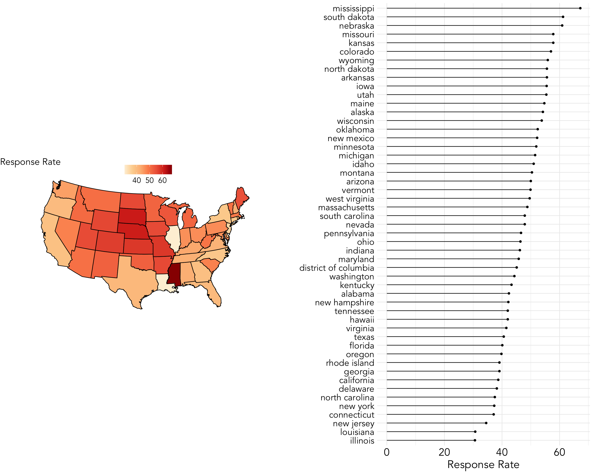
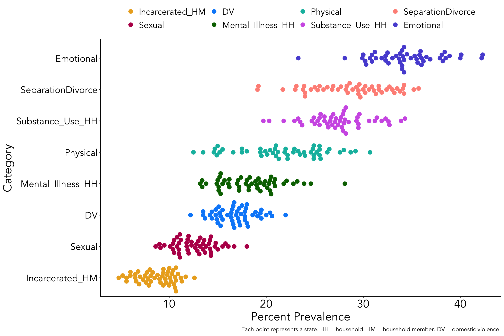

Adverse Childhood Events in the United States by State
news
Introduction
Dataset
The first data set we will be exploring is data scrapped from a CDC website article named, “Prevalence of Adverse Childhood Experiences Among U.S. Adults — Behavioral Risk Factor Surveillance System, 2011–2020” and can be found here in Table 1. This data was collected from 2011 to 2020 and is one of the most complete surveys that has currently been done in the United States on adverse childhood event prevalence.
The information scraped from the website is the summary statistics by state and categorized by adverse childhood type. More specifically, the adverse childhood events were categorized by emotional abuse, physical abuse, sexual abuse, domestic violence in the household, substance use in the household, mental illness in the household, parental separation or divorce, and incarcerated household member. Generally speaking, these are the 8 most commonly collected adverse childhood events. In addition, we also have the response rate by state and year which is an important measure to keep in mind when evaluating the data due to response bias.
IMPORTANT DISTINCTION: Adverse childhood experiences that are emotional abuse, physical abuse, and sexual abuse are events that happen directly to the child. In comparison, domestic violence in the household, substance use in the household, mental illness in the household, parental separation or divorce, and incarcerated household member are adverse childhood experiences where the child is present (i.e., a bystander). These events create instability and uncertainty for a child resulting in a chronic stress environment and have been shown repeatedly to increase risk for a multitude of illnesses and risky/maladaptive behaviors.
Definitions
- This dataset has many abbreviations and could be interpreted wrong without the following operational definitions from the study expressed in questions asked (These were not the only questions asked to determine if the person experienced a specific adverse childhood event, but I hope this gives a better idea on how this was defined).
- Emotional abuse (
Emotional):- “How often did a parent or adult in your home ever swear at you, insult you, or put you down?” (answers: never vs. at least once)
- “How often did a parent or adult in your home ever swear at you, insult you, or put you down?” (answers: never vs. at least once)
- Physical abuse (
Physical):- “How often did your parents or adults in your home ever hit, beat, kick, or physically hurt you in any way? Do not include spanking” (answers: never vs. at least once)
- “How often did your parents or adults in your home ever hit, beat, kick, or physically hurt you in any way? Do not include spanking” (answers: never vs. at least once)
- Sexual abuse (
Sexual):- “How often did anyone at least 5 years older than you or an adult, ever try to make you touch them sexually?” (answers: never vs. at least once)
- “How often did anyone at least 5 years older than you or an adult, ever try to make you touch them sexually?” (answers: never vs. at least once)
- Separated/Divorced (
SeparatedDivorced):- “Were your parents separated or divorced?” (answers: no vs. yes)
- “Were your parents separated or divorced?” (answers: no vs. yes)
- Mental illness in the household (
Mental_Illness_HH):- “Did you live with anyone who was depressed, mentally ill or suicidal?” (answers: no vs. yes)
- “Did you live with anyone who was depressed, mentally ill or suicidal?” (answers: no vs. yes)
- Substance Use in household (
Substance_Use_HH):- “Did you live with anyone who used illegal street drugs or who abused prescription medications?” (answers: no vs. yes)
- “Did you live with anyone who used illegal street drugs or who abused prescription medications?” (answers: no vs. yes)
- Domestic violence in household (
DV):- “How often did your parents or adults in your home ever slap, hit, kick, punch or beat each other up?” (answers: never vs. at least once)
- “How often did your parents or adults in your home ever slap, hit, kick, punch or beat each other up?” (answers: never vs. at least once)
- Incarcerated household member (
Incarcerated_HM):- “Did you live with anyone who served time or was sentenced to serve time in prison, jail, or other correctional facility?” (answers: no vs. yes)
- Emotional abuse (
Questions of Interest
When looking over this dataset, a few things I want to be the focus and in the front of our minds are,
Response rate is very important to keep in mind when comparing percentages of prevalence of these adverse childhood events because of response bias.
Which adverse childhood events are more common overall and which ones are less common?
Within each category of adverse childhood events, which states have the highest rate of prevalence.
Exploratory Analysis
Response Rate
- A “good” response rate is about 95%, but because this is a very sensitive topic we see a much lower response rate. The reason why response rate is important to keep in mind is because you are more likely to have response bias in your data (i.e., those who are passionate or care about responding do respond and those who don’t care do not leaving the data biased). This is just something we should keep in mind as we look at the data because states with a response rate of 40% are going to have a different bias level compared to states with a response rate of 60%.
- This map shows that there was higher response rates from states in the middle of the country compared to the states on the west or east coast. Mississippi had by far the highest response rate compared to all other states.
General Prevalence of ACEs by Category/Type
Percentage Reported by State

Proportion Reported by State
- Using a proportion might be helpful in this case since we have different percentages of response rates by state.
By state, \(X\) being one of the 8 categories of reported adverse childhood events,
\[X_{Proportion} = \frac{X\%}{(Emotional\% + Physical\% + SeparationDivorce\% + SubstanceUse\% + MentalIllness\% + DV\% + Sexual\% + Incarcerated\%)}\]
Emotional Abuse
- Emotional abuse was the most prevalent adverse childhood experience reported. On the emotional abuse prevalence map by state, we see a general pattern that emotional abuse is reported more on the west coast compared to the east coast.
Separation/Divorce
- On the separation or divorce prevalence map by state, we see a general trend of a higher concentration of separations and divorces in the southeast.
Substance Use in the Household
- On prevalence of substance use in the household, there looks to be a general prevalence overall of 25%, but greater prevalence in the northwest (not exclusively).
Physical Abuse
- Prevalence of physical abuse shown through the map appears to be greater in the southwest.
Mental Illness in Household
- This map graph is interesting because it appears mental illness in the household is most prevalent in a much greater way in Utah compared to all other states.
Domestic Violence in Household
- Interestingly, in this map we see Nevada stand out as having a much greater percentage of domestic violence compared to all other states.
Sexual Abuse
- Oregon stands out as having a larger percentage of sexual abuse occur compared to all other states.
Incarcerated Household Member
- In the map, we see a trend of higher percentages of a household member being incarcerated in the southeast region. This generally makes sense because those states have a tendency to have a higher percentage of residences that are people of color, and due to systemic racism, those with a darker complexion are more likely to be incarcerated wrongfully or for petty crimes compared to white people.
States Above 75th Percentile
Something I noticed when doing this is that many of the states above the 75th percentile for a specific adverse childhood event prevalence showed up multiple times. To evaluate this further I decided to do the graph below which shows all the states that were included in at least one 75th percentile dataset to evaluate exactly how many times specific states showed up in the 75th percentile across different adverse childhood events.
In a sense, it does make sense that if a state had shown up once in a 75th percentile datasets that they would most likely show up again because instability leads to more instability. This visual, in my opinion, shows a real problem occurring within certain states.
Discussion & Limitations
This exploratory analysis evaluated the prevalence of different adverse childhood events both generally in the US and by state. Due to my extensive research in this area, I was not too surprised with the findings for prevalence overall, but was surprised when looking by state. It is always upsetting to look at this because the long-term effects of adverse childhood events are increased risk for chronic physical illness, debilitating mental illness, alcohol use disorder, substance use disorder, shorter lifespan, and much more, but in the US we only care about an issue when it is about to kill you and not prevent it to begin with.
There are a multitude of limitations to this exploratory analysis with the biggest being low response rate which we know leads to increase in response bias. In addition, this analysis was simply by state prevalence and did not include any demographics of the participants (Table 2 of the article). Due to this, I will put a precautionary warning here that acknowledges for everyone that there is ample evidence that those who experience the most adverse childhood events are those living in low-income urban areas which often consists of majority people of color (Maguire-Jack et al., 2021).